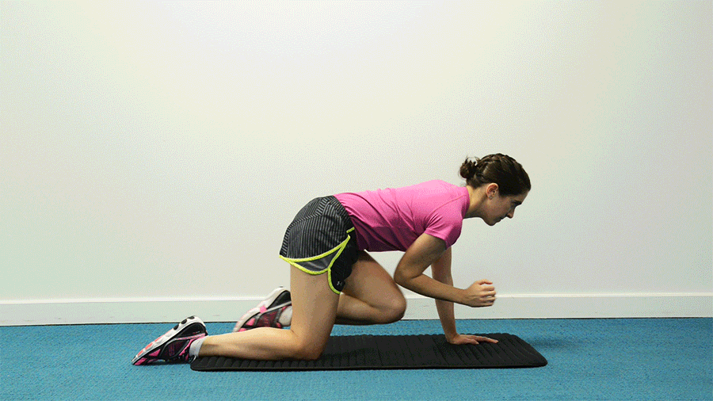
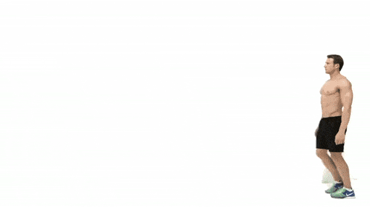
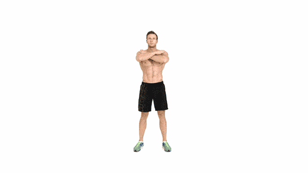
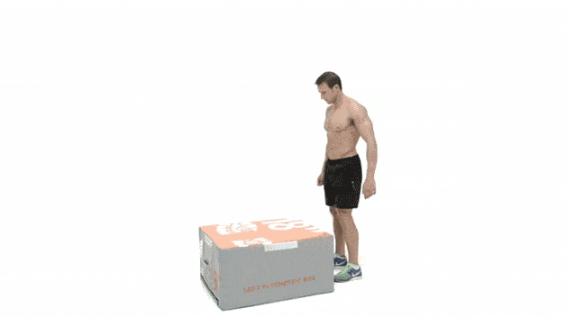
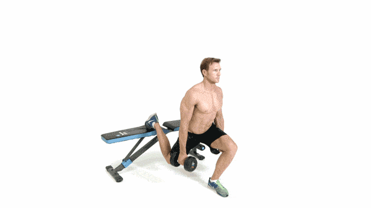

Cardio
1. El patinador

Cómo se hace: Cruza la pierna izquierda detrás de la pierna derecha mientras doblas la rodilla derecha 90 grados.
Extiende el brazo derecho hacia un lado y gire el brazo izquierdo sobre la pierna derecha. Salta hacia el otro lado,
cambiando la posición de tus piernas y brazos. Esa es una repetición.
Series y repeticiones recomendadas: 6-8 series de 8 repeticiones.
2. Rollbacks

Cómo se hace: Comienza de pie. Con un solo movimiento, siéntate en el suelo y rueda hacia atrás,
llevando las caderas y los talones hacia el techo.
Vuelve a poner los pies en el suelo y a ponerte de pie. Esa es una repetición.
Series y repeticiones recomendadas: 4-5 series de 10 repeticiones.
3. Burpee con salto de 180

Cómo se hace: Comienza en posición de sentadilla, con los pies separados al ancho de los hombros. Deja caer las caderas y coloca las palmas en el suelo,
luego salta con los pies hacia atrás y baja tu cuerpo hasta el suelo.
Ponte de pie y luego salta con los pies hacia delante para volver a la posición de sentadilla.
Finalmente, salta hacia arriba girando 180 grados. Luego repite hacia el otro lado. Esa es una repetición.
Series y repeticiones recomendadas: 6-8 series de 8 repeticiones.
Abdominales
1 Perro pájaro

Este sencillo movimiento sirve para trabajar el torso completo y ayuda a potenciar la estabilidad en la zona lumbar,
lo cual mejora desde la postura hasta la capacidad de realizar ejercicios más complejos y exigentes.
Empieza con 10 repeticiones en cada lado, manteniendo el control durante el ejercicio completo.
2. Pelota de estabilidad

Cualquier movimiento con la pelota de estabilidad funciona bien, ya que se trabajan los músculos para mantener el equilibrio. Empieza tumbada con los tobillos encima del balón.
Utilizando el tronco, impulsa las rodillas hacia el pecho. Las caderas se elevarán a medida que la pelota se mueve hacia los brazos.
Luego, vuelve a la posición original de la pelota. Repite 10 veces.
3. El puente de una pierna
Mantener el equilibro con una sola pierna requiere el ejercicio de los músculos del tronco para dar estabilidad al cuerpo cuando subes y bajas.
Tumbado boca arriba con los brazos a los lados, apoya el talón derecho en el suelo y extiende la pierna izquierda hacia el techo.
Presionando el talón derecho, levanta las caderas hasta que la columna se quede recta.
Luego, baja las caderas poco a poco para volver a la posición del principio.
Hazlo 12 veces con cada pierna.
Skipping
1- Zancadas caminando

Procura mantener la espalda recta en todo momento y rozar el suelo con la rodilla si es posible.
12 repeticiones con cada pierna, 3 series y descanso de medio minuto entre serie y serie.
2. Sentadillas con salto

Al saltar procura mantener bien el equilibrio para evitar lesiones en las rodillas. Y, si es posible, baja tan profundo como puedas en cada repetición.
12 repeticiones, 3 series y 30 segundos de descanso entre serie.
3. Sentadilla a una pierna con o sin mancuernas

12 repeticiones por pierna, 3 series y descanso de medio minuto entre serie y serie.
Espalda recta y core firme para una mejor coordinación durante el ejercicio. En el CrossFit se conoce este ejercicio como pistols.
5. Subidas de escalera a cajón

12 repeticiones por pierna, 3 series sin descanso. Llevar un ritmo constante es básico para ejecutar este ejercicio.
Cuidado porque en las últimas repeticiones, por el cansancio, puedes acabar golpeándote la tibia contra el cajón.